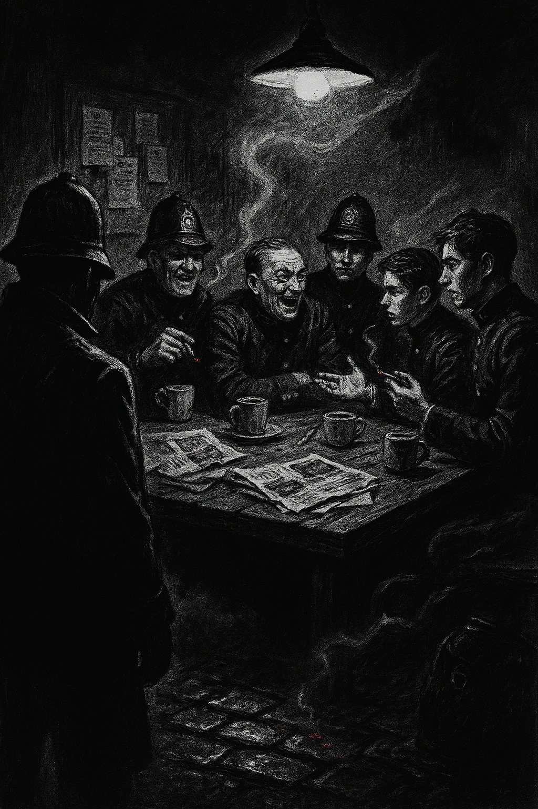

Salle commune du commissariat

L’odeur de tabac froid et de cuir humide emplit la pièce. Quelques
policiers, fatigués et nerveux, discutent à voix basse autour d’une table
jonchée de tasses de thé tiède et de journaux maculés d’encre. Quand vous
entrez, les conversations s’interrompent brièvement — l’ombre d’un nouveau
venu attire toujours la méfiance.
En tendant l’oreille, vous percevez deux choses :
-
Des rires amers : un vieux sergent raille la campagne, insinuant qu’un
“bleu” comme vous ne tiendra pas une semaine dans Whitechapel. Ses
paroles déclenchent quelques ricanements, mais derrière la moquerie se
cache la peur.
-
Un ton plus grave : deux jeunes constables discutent d’une découverte
récente — une rumeur selon laquelle un médecin des quartiers pauvres
aurait été interrogé, puis relâché faute de preuves. Certains pensent
qu’il sait plus qu’il ne veut bien l’avouer.